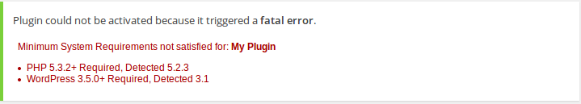
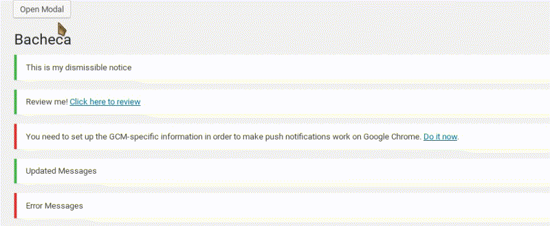

WordPress Plugin Boilerplate Powered 2.0
Created by Daniele Scasciafratte / Mte90Net
Daniele Scasciafratte
- Co Founder Codeat - Full Stack Developer
- Mozillian & Mozilla Reps & Mozilla Tech Speaker
- WordPress Core Contributor/Developer/Translator
- Open Source Multiversal
WPBP is
- a Framework-Free solution
- boilerplate plugin with examples
- snippets
- many libraries available
- bash scripts to speed up
- CoffeeScript and SASS support
- WordPress compliant at 100%
WPBP Original Modules:
The modules are indipendent each other with a specific things in mind.- Be simple
- By parameters
- Examples included
- Easy API
- Be simple again
WPBP/PointerPlus

WPBP/CronPlus:
$args = array(
// hourly,daily,twicedaily,weekly,monthly or timestamp for single event
'recurrence' => 'hourly',
// schedule (specific interval) or single (at the time specified)
'schedule' => 'schedule',
// Name of the Cron job used internally
'name' => 'cronplusexample',
// Callback to execute when the cron job is launched
'cb' => 'cronplus_example',
// Args passed to the hook executed during the cron
'args' => array( get_the_ID() )
);
function cronplus_example( $id ) {
echo $id;
}
$cronplus = new CronPlus( $args );
// Schedule the event
$cronplus->schedule_event();
// Remove the event by the schedule
$cronplus->clear_schedule();
// Jump the scheduled event
$cronplus->unschedule_event();
WPBP/Widgets-Helper
A class that extends the built-in WP_Widget class to provide an easier/faster way to create Widgets for WordPress.
WPBP/FakePage
new Fake_Page(
array(
'slug' => 'fake_slug',
'post_title' => 'Fake Page Title',
'post_content' => 'This is the fake page content'
)
);.WPBP/Template
// This is like the woocommerce function
function load_content_demo( $original_template ) {
if ( is_singular( 'demo' ) && in_the_loop() ) {
return wpbp_get_template_part( 'plugin-name-folder', 'content', 'demo', false );
} else {
return $original_template;
}
}
add_filter( 'template_include', 'load_content_demo' );
// This is an extended version that search for folder with names based on locales like it_IT
$get_template_email = wpbp_get_template_part( 'plugin-name-folder' , 'header', 'prefix' );WPBP/Debug
$debug = new WPBP_Debug( );
$debug->log( __( 'Plugin Loaded', 'your-textdomain' ) );WPBP/CPT_Columns
$post_columns = new CPT_columns( 'demo' );
$post_columns->add_column( 'cmb2_field', array(
'label' => __( 'CMB2 Field' ),
'type' => 'post_meta', //text, thumbnail, post_meta, author, custom_tax, custom_value
'meta_key' => '_demo_meta_text',
'orderby' => 'meta_value', // For WP-Query
'sortable' => true,
'prefix' => '',
'suffix' => '',
'def' => 'Not defined', // Default value in case post meta not found
'order' => '-1' // This is the last column
)
);WPBP/Requirements
WPBP/Language
Wrap specific methods to get string or register it or get the language for Ceceppa Multilingua, Polylang and WPML plugins.
WPBP/Backbone-Modal-View
Integrated modules:
- WebDevStudios/CMB2
- origgami/CMB2-grid
- voceconnect/wp-contextual-help
- nathanielks/wp-admin-notice
- WebDevStudios/CPT_Core
- WebDevStudios/Taxonomy_Core
- Freemius/wordpress-sdk
- julien731/WP-Dismissible-Notices-Handler
- julien731/WP-Review-Me
- wpackagist-plugin/posts-to-posts
- athlan/custom-fields-permalink-plugin
Snippet included:
- Shortcode example code
- Dashicon as dependence of admin stylesheet
- Bubble notification on pending cpts
- Import/Export settings
- Custom capabilities with cpts and taxonomy support
- wp_localize_script for pass PHP var to JS in the frontend
- Class in frontend body with the slug of plugin
- Support for your CPTs in At glance widget/Activity widget in dashboard
- Support for CMB in the options page
- Integrated DOM-Based Routing on frontend of Roots Template
- Transient examples with caching
- Support for Web Push
Code Generator
https://github.com/wpbp/generatorWiki
- https://github.com/Mte90/WordPress-Plugin-Boilerplate-Powered/wiki/